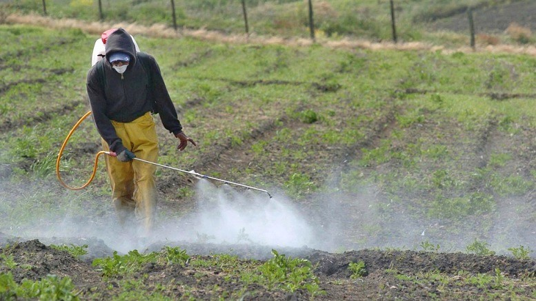
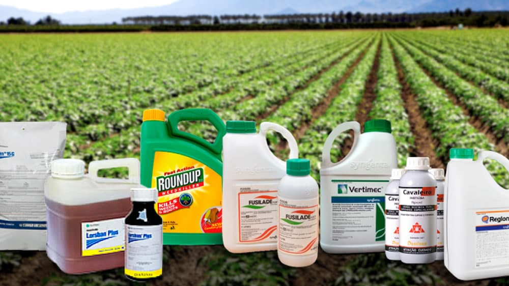
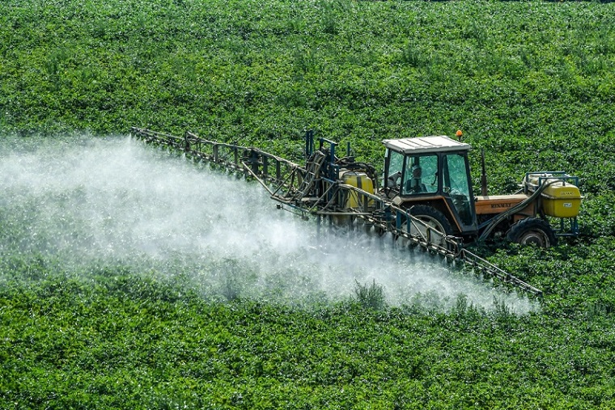
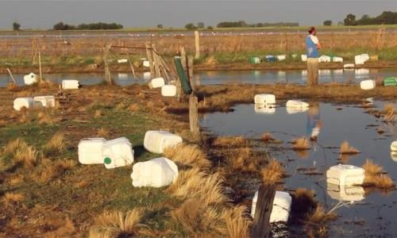
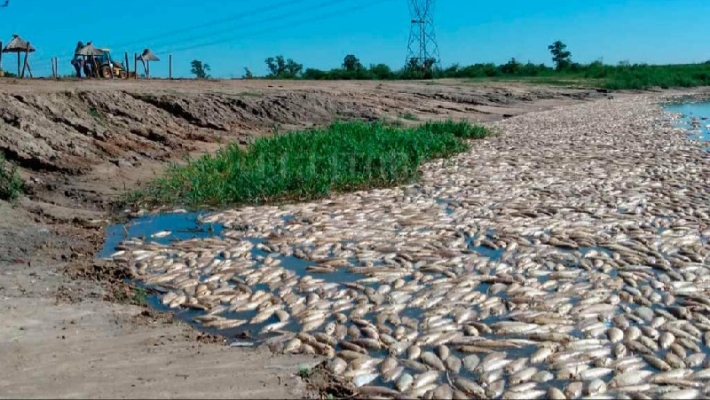
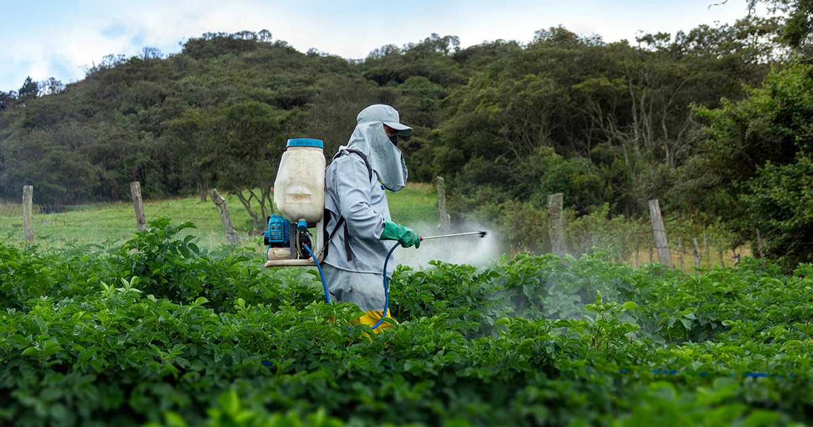

Introduction
Nowadays, in the field of modern agriculture, agrochemicals play a crucial role in controlling pests and improving crop productivity. However, their indiscriminate use and poor management can have devastating effects on the soil and the environment. In this blog post, we will explore what agrochemicals are and their consequences on soil, highlighting the negative impacts they generate on our surroundings.

What Are Agrochemicals and What Are Their Consequences?
Agrochemicals, also known as pesticides, herbicides, and insecticides, are synthetic chemical products designed to eliminate or control pests and diseases in crops. Although they have significantly contributed to increased agricultural production, their excessive use has generated a series of concerning consequences.

Environmental Impact of Agrochemicals
One of the main environmental impacts of agrochemicals is their negative effect on soil biodiversity. These chemical products not only eliminate unwanted pests but also beneficial organisms, such as bacteria and fungi that are important for soil health. This alteration of the microbiota can decrease soil fertility and its ability to maintain ecological balance.

Soil Contamination
Agrochemicals can persist in the soil for prolonged periods and accumulate due to their slow degradation. This can result in soil contamination and affect microbial biodiversity and activity, which in turn can reduce soil fertility and quality.

Water Contamination
Agrochemicals can be carried away by rain or irrigation and reach nearby water sources, such as rivers, lakes, and aquifers. This runoff can contaminate water, endanger aquatic life, and compromise the quality of water for human consumption and agricultural use.

Toxicity to Wildlife
Many of these chemical products are toxic to insects and animals that are not pests, thereby affecting the food chain and biological diversity in the agricultural ecosystem.

Risks to Human Health
Exposure to agrochemicals can have negative effects on human health. Agricultural workers who handle and apply these products are exposed to higher risks. Additionally, these chemicals can be present in the food that reaches the consumer's table.

Imbalance in the Ecosystem
Excessive use of agrochemicals can cause imbalances in agricultural ecosystems by eliminating beneficial organisms and promoting the proliferation of resistant pests.

“The more we pour the big machines, the fuel, the pesticides, the herbicides, the fertilizer and chemicals into farming, the more we knock out the mechanism that made it all work in the first place.” — David R. Brower